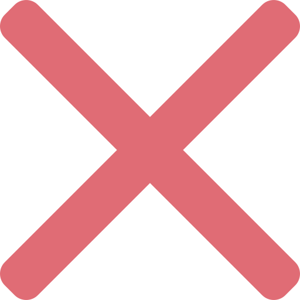

About
Сайт створений для демонстрації React-додатків.
На цей момент сайт вміщує два додатки, написані з нуля на React.
Не кожен із додатків є закінченим. Детальніша інформація у меню навпроти самого додатку.

Weather Forecast
Прогноз погоди. Додаток написаний на React.
Написання додатка вимагає роботи з fetch запитами та подальшою обробною отриманих даних.
Дані з погодою отримуються з ресурсу openweathermap.
Робота з додатком
- Додаток показує погноз погоди на 5 найближчих днів з інтервалом у 3 години.
- Вводити назву міста потрібно англійською або російською
- На головному екрані додатку відображається погода на найближчі 24 години з інтервалом у 3 години.
- Клік на кожну з таких комірок відображає детальну інформацію про погоду на вибрані 3 години.
- Клік на одну з чотирьох нижніх коміров оновлює погоду на найближчі 24 години, замінюючи її вибраним днем.
- Повторний клік по вибраній комірці повертає погоду на найближчі 24 години.
Заплановане оновлення додатка
To-Do App
Список справ. Додаток написаний на React.
Уся робота додатку крутиться навколо оновлення масиву з задачами.
Робота з додатком
- Внизу додатка є меню, за домогою якого користувач може: додати завдання, відфільтрувати список із завданнями за маркером, переглянути/додати маркери.
- Додаток підтримує вкладення завдань (максимум 3 рівні), методом їх перетягування. Додаток написаний таким чином, що кількість вкладень може бути безкінечною. Така можливість присікається, алгоритмом.
- У завдання є меню, за допогою якого користувач може видалити задачу, або її маркери.
- Згалом усе інтуїтивно зрозуміло.